Shell US Hosting Company
Senior Geoscientist Analyst Specialist
United StatesSenior Geoscientist | Subsurface Data Analytics & AI | Product Owner
+15 yrs experience
Subsurface domain expert specializing in AI-augmented analytics and product delivery, grounded in seismic-to-well integration, volumetrics/risk, and petrophysical interpretation. I combine interpretation, prospect maturation, and QC rigor with agentic workflows (retrieval + orchestration + automation) to reduce manual effort and increase decision consistency. I deliver maintaina- ble solutions built in VS Code packaged as intuitive advanced visual analytics for broad adoption.
Experienced in supporting WRFM and subsurface opportunity maturation by integrating multi-disciplinary data into structured, decision-ready frameworks that accelerate identification, prioritization, and execution readiness.

Spotfire CAP · Databricks SQL/Python · NLP/LLM workflows · Agentic AI
Figma · Azure DevOps · ArcGIS · VS Code · GitHub
Seismic interpretation · Prospect maturation · Volumetrics & risk · Petrophysical workflows · WRFM
Senior Geoscientist Analyst Specialist
United StatesSide Venture: Founded
United StatesSenior X-Digi Geoscientist (Product Owner)
United StatesSr Exploration Geoscientist (Technical Lead)
NetherlandsExploration Geoscientist
NigeriaSenior Seismic Interpreter
Qatar